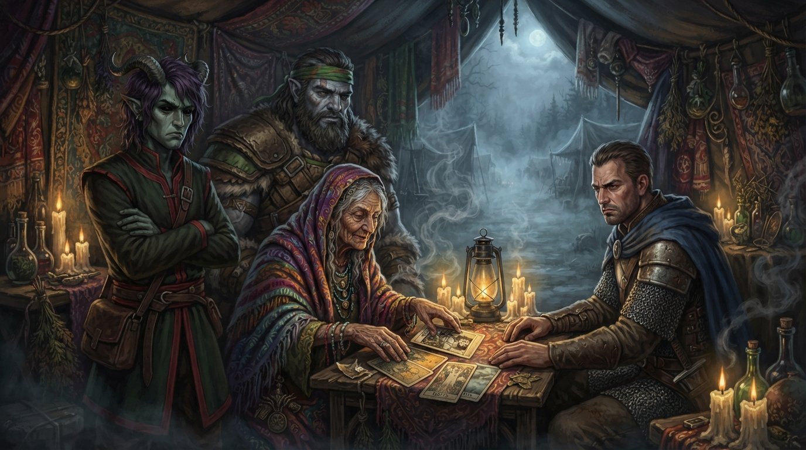
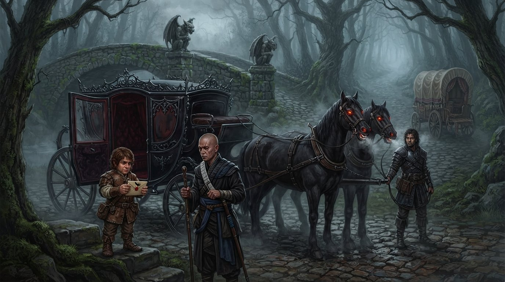
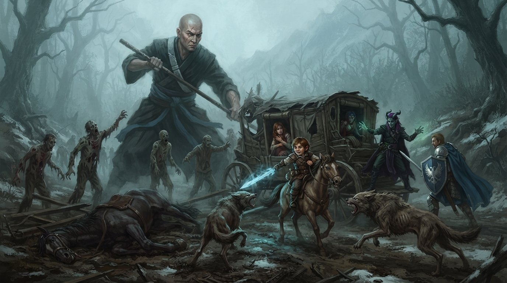
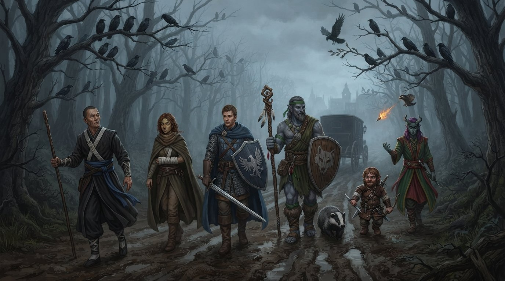

L'invito di Strahd
Ospiti di Strahd
Al campo dei Vistani il fuoco crepita e il vino gira, ma le parole che arrivano dalla famiglia seduta accanto al gruppo hanno poco di festoso. Se sono a Barovia, spiegano, non è per caso: è stato Strahd a invitarli. E Strahd ha spie ovunque.
Floki, che non si accontenta mai, chiede la cosa più ovvia: se i Vistani sono liberi di andare e venire, perché non se ne vanno? La risposta è semplice e senza speranza. Strahd può trovarli ovunque.
Arrivano altri consigli, tutti dello stesso tono rassicurante. Il colle di Yester è pieno di druidi malefici, e il gruppo ne sa già qualcosa. Dal mulino bisogna stare lontani. E poi, quasi sottovoce, un pettegolezzo che sa di leggenda: Strahd ha amato molte donne, ma nessuna come Tatiana.
Madame Eva
La tenda della veggente si apre, e Madame Eva non sembra affatto sorpresa. Li conosce già, dice. Li stava aspettando.
Da Barovia, spiega, i modi per uscire sono pochi. Floki prova a uscire dalla tenda, e non ci riesce. Poi la veggente propone di leggere loro il futuro. Floki non è per niente convinto, ma le carte sono già sul tavolo.
Le carte
La prima carta parla del passato, perché conoscere il passato aiuta a conoscere il nemico. È l'Otto di denari, l'Esattore. Eva racconta che ai Vistani è scomparsa una bambina, e che quella bambina ha la chiave per sbloccare il tesoro.
La seconda carta narra di una forza potente, benigna e protettiva: un simbolo sacro di ardente speranza. È per Logan. È il Ciarlatano, il Sette di glifi. Eva vede un mulino solitario accanto a uno strapiombo, e il tesoro al suo interno. Poi precisa, come chi conosce i suoi clienti: non vi sto dicendo di andare al mulino, vi sto solo dicendo che cosa potreste trovare.
La terza è una carta di forza e potere, ed è per Bastian. Descrive un'arma di vendetta, una spada di luce solare. È il Missionario, il Due di glifi. Eva vede un giardino spolverato di neve, sorvegliato da uno spaventapasseri dal sorriso di iuta. Non guardate il giardino, ammonisce, ma posate gli occhi sul guardiano.
La quarta carta fa luce su qualcuno che sarà di grande aiuto nella lotta contro le tenebre. Mentre la gira, Eva guarda dritto Floki. Il tuo più grande alleato, gli dice, sarà un mago. La sua mente è a pezzi, ma i suoi incantesimi sono potenti.
L'ultima carta è il Corvo. Il vostro nemico è una creatura delle tenebre, i cui poteri trascendono la mortalità, e questa carta vi condurrà da lui. L'indicazione è una sola: guardate la tomba della madre.

La notte al campo
Il gruppo si accorda con i Vistani per farsi accompagnare a Vallaki la mattina seguente. Ireena va a dormire da sola, e i compagni decidono di non perderla d'occhio. Zane, che di porte chiuse se ne intende, prova a entrare per controllarla da vicino.
Floki, Bastian e Logan invece raggiungono l'uomo più grosso del campo, l'unico rimasto sveglio, che suona una melodia tranquilla accanto al fuoco. Non dice niente di particolarmente interessante, ma una cosa la mette in chiaro: di lui e della sua famiglia ci si può fidare. Non di tutti.
La notte passa indenne. A Barovia è quasi una notizia.
La carrozza nera
Al mattino il carro li aspetta, con un cocchiere vistano a cassetta. Passano vicino alle cascate di Tser, attraversano un ponte e superano due gargoyle. Poi i cavalli si fermano. Si ferma anche il cocchiere. In mezzo alla strada c'è una carrozza nera.
I cavalli che la tirano hanno occhi completamente rossi, e dalla bocca esce un fiato gelido, misto a bava. Lo sportello si apre, ma non scende nessuno. È un invito. Ireena resta immobile: è convinta che sia Strahd. Bastian rimane con lei, mentre gli altri vanno a vedere.
Logan prova a parlare con i cavalli, che non rispondono. Sulla carrozza c'è una busta; la apre Zane. È una lettera di Strahd, che li invita a cena. Logan prova a spostare la carrozza, ma non ci riesce.

E mentre il gruppo continua a perdere tempo a decidere cosa fare, dalla strada si avvicinano diverse creature che sembrano zombie.
Zombie, lupi e cavalli
Zane apre le danze lanciando un pugnale. Uno zombie colpisce uno dei cavalli del carro, e Floki fa diventare grande Chirrut. Il cavallo muore. Si combatte su più fronti: Zane da sopra un cavallo, Floki e Bastian dal carretto. Sia Ireena sia il cocchiere vengono feriti.
Due zombie cadono, ma intanto arrivano due lupi. Zane ne fa fuori un altro praticamente senza muoversi, con una lama psionica. Logan si trasforma in lupo.
Poi il prezzo da pagare: muore il cocchiere vistano, e muore anche l'altro cavallo. I lupi raggiungono il gruppo, ma vengono sconfitti. Floki cura Ireena.

I corvi
Senza più cavalli né cocchiere, ci si rimette in cammino verso Vallaki, a piedi. Chirrut chiude la porta della carrozza, e subito compaiono i corvi. Floki vuole colpirli, Chirrut lo ferma.
Più avanti, quando gli altri non lo vedono, Floki lancia comunque un dardo infuocato e colpisce un corvo, che se ne va. Chi arreca al corvo un danno, diceva qualcuno al villaggio… ma Floki non ha mai dato retta ai detti popolari.
E intanto, lungo la strada, continuano a sentire strani rumori.
